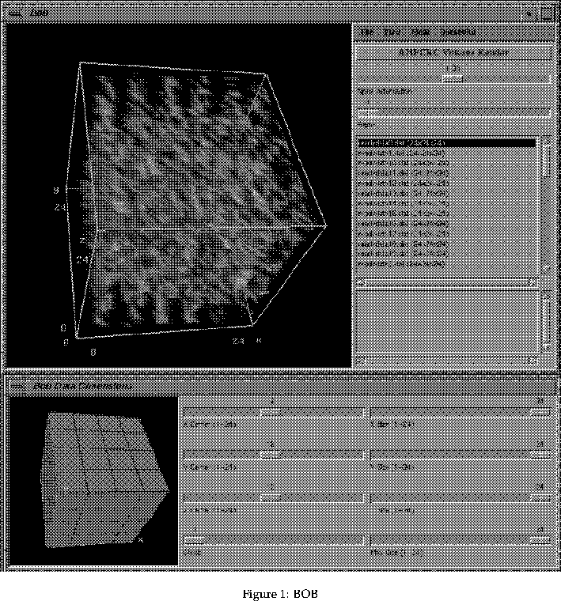

To use BOB you must be at an SGI graphics terminal.
To start using BOB with a block of data (see section 5.2)
of dimensions X
Y
Z:
bob -s XY
Z filename
For example a file called junkdata.char with dimensions of 12 x 10 x 14 would be loaded into BOB by typing:
bob -s 1210
14 junkdata.char

When BOB has loaded up the user will be presented with two windows, the main window (titled bob and the Bob Data Dimensions window. The left hand side of the main window contains the image and the right hand side contains the following
The dimension window is the control window. Initially the box of data
will have dimensions of no greater than 3232
32.
The user can then
zoom in on sections of the cube, rotate the cube, and pan out.
The dimension window echos the movement of the image, although the
user cannot control movement from this window. However what can be done
from this window includes resizing the image, and moving the location
of the centre of the image. The sliders contained in this
window can be used for that purpose.